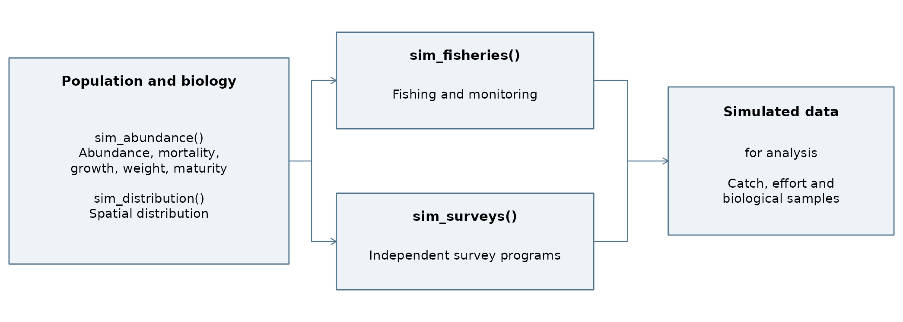

SimSurvey now simulates multiple fisheries with user-supplied allocations, fishery monitoring, and independent survey programs. Weight and maturity models add biomass and mature-biomass truth. These extensions support questions about how targeting, knowledge, gear selectivity, reporting, and biological sampling affect catches, CPUE, and survey data. For population generation and stratified survey analysis, see Regular et al. (2020).
Fisheries allocate deaths already specified by total mortality
Z. They do not change subsequent years’ populations.
Surveys observe the original annual population, including when simulated
after fisheries.

Fisheries and surveys start from the same annual population. Outputs retain their fishery or survey-program identifiers.
The setup follows the sim_survey() example, using five
ages, a 20-km grid, and default population and spatial processes over
ten years. The examples share one abundance history and grid. A survey
comparison holds the spatial pattern fixed on the same grid.
set.seed(601)
cohort_history <- sim_abundance(ages = 1:5, years = 2001:2010)
grid <- make_grid(res = c(20, 20))
population <- cohort_history |> sim_distribution(grid = grid)sim_abundance() accepts growth, weight, and maturity
functions. sim_growth() is an alias for
sim_vonB(). sim_weight() returns kilograms
from length in centimetres; sim_maturity() returns maturity
probabilities. Its default basis is length; use
maturity_by = "age" with age-appropriate parameters for an
age-based curve.
Weight defaults follow Varkey
et al. (2024), Table 10. Maturity defaults approximate the
historical 3Ps female relationship in Brattey and
Morgan (1996), Table 3. Here one curve applies to all fish; these
are starting values, not a contemporary sex-specific assessment model.
For example, maturity = sim_maturity(x50 = 50) changes the
length with 50% maturity probability.
B and S contain expected biomass and mature
biomass in kilograms, by age and year. B_at_length and
S_at_length give the corresponding length-based values;
sp_N contains spatial B and S.
S covers all fish under the supplied curve, without sex
structure, spawning timing, or recruitment feedback. Both summaries
integrate weight and maturity jointly over the length-age key (Appendix A1).
Use stock_biology() for the underlying means by age or
length and year. mean_weight_kg and
mean_mature_weight_kg are kilograms per fish, with immature
fish contributing zero to the latter. prop_mature is the
proportion of fish mature. The age table also gives
mean_length in centimetres.
stock_at_age <- stock_biology(population)$at_age
plotly::subplot(plot_trend(population, mat = "B"), plot_trend(population, mat = "S"),
titleX = TRUE, titleY = TRUE, margin = 0.09) |>
plotly::layout(showlegend = FALSE) |> vignette_widget()Omitting sim from sim_fishery() creates a
configuration without simulation or random draws. Declare fisheries
together; their names identify the outputs.
trawl <- sim_fishery(target = 0.2, catch_model = sim_capture(q = 400))
gillnet <- sim_fishery(
target = 0.1, catch_model = sim_capture(q = 200),
selectivity = sim_logistic(x50 = 40), selectivity_by = "length"
)
set.seed(502)
fished <- population |>
sim_fisheries(trawl = trawl, gillnet = gillnet, n_sims = 5)The trawl uses default age selectivity; the gillnet illustrates
length selectivity. These names do not imply calibrated gear models. To
run one fishery directly, use
sim_fishery(population, target = 0.2, catch_model = sim_capture(q = 400)).
sim_capture() converts its q coefficient,
gear amount, duration, selectivity, and cell area to an encounter
probability. Capture q has grid-area units per gear-time
unit and can exceed one; survey q is a dimensionless
probability. Default gear amount and duration are one, and their product
is effort. Specify gear_unit and time_unit for
physical units. Both components can be callbacks;
capacity_per_gear adds a catch-capacity limit. Every
fishery inherits the population’s weight relationship.
By default, target allocates a share of Z
before selectivity. Selectivity is not rescaled: its
magnitude affects both the reference catch target and capture. Other
target types specify fully selected annual F, catch numbers, or catch
kilograms:
f_target <- sim_fishery(target = 0.1, target_type = "F_full",
catch_model = sim_capture(q = 400))
number_target <- sim_fishery(target = 1000, target_type = "catch_n",
catch_model = sim_capture(q = 400))
mass_target <- sim_fishery(target = 1000, target_type = "catch_kg",
catch_model = sim_capture(q = 400))F_full is F at selectivity one. It scales the
selectivity curve directly; it is not an average over an age range.
Catch targets scale the same curve to the requested expected catch under
the existing Z. Each fishery may use a different target
type in sim_fisheries().
Share and F_full settings become catch targets in
numbers; catch_n supplies that number directly. Kilogram
targets stop against realized kilograms, without converting the quota
into a fixed number of fish. Every mode retains whole fish. The final
kilogram catch is capped using aggregate counts, so a small shortfall
can remain if no eligible fish fits the remaining allowance.
Targets must be nonnegative and aligned with years. Number and
kilogram targets cannot exceed starting N and
B, respectively. They must also fit the mortality available
under Z and selectivity: 100 fish with
Z = log(2) provide only 50 annual deaths. Reference F after
selectivity, summed across all fisheries, must not exceed Z
at any age/year. Combined reference catches must also fit starting
N and B. Invalid specifications error before
fishing, identifying the fishery, year, and relevant limit. Access and
capture constraints can still prevent valid targets from being
reached.
Operations from active fisheries are interleaved at random on shared stocks. Accepted catches reduce available fish and age-specific death allowances. This prevents double removals but can constrain individual allocations.
Component in fishery
|
Contents |
|---|---|
annual |
Target, catch, effort, CPUE, shortfall, and stopping status |
setdet |
Operations, reports, sampling counts, and constraint flags |
catch_at_age,
catch_at_length
|
True aggregate catch composition |
sp_removals,
mortality_ledger
|
Spatial removals and the shared population balance |
reference |
Reference and realized catches and F at age, original
N/Z, and total_deaths
|
samp |
Biological observations and sampling probabilities |
Commercial catches remain aggregate; only bounded biological samples
become individual records. light = FALSE retains joint
age-length catches and sample truth for inspection.
A shortfall is the operational catch target minus
true catch, in fish or kilograms as recorded by
annual$target_unit. requested_target retains
the supplied share, F, or catch setting; target is the
stopping catch allowance and achieved is catch in those
same units. Expected catches in both units are retained as
reference_target_n and reference_target_kg.
target_met means the target was caught;
exhausted means no eligible accessible catching
opportunities remain; operation_limit means the allowed
operations ended first. Access restrictions, gear response, and shared
stocks can all constrain catches.
For 100 fish, Z = log(2), full selectivity, and share
0.4, the target is 20 fish from 50 total deaths. If only five are
caught, the shortfall is 15. Reference F is
;
realized-equivalent F is
.
The remaining balance is 45 other deaths and 50 survivors. Unused
fishing allocation becomes other deaths under fixed mortality; it does
not improve later survival.
total_deaths is the rounded all-cause death count for an
age/year, shared across fisheries and repeated on their reference rows.
Do not sum it across fisheries. F_realized is the
Baranov-equivalent rate from true catches, original N, and
fixed Z. Meeting a total-number target need not reproduce
reference F at every age or correspond to one exact realized
F_full. F_full_reference records the intended
fully selected F for F and catch modes; share targets retain F at age
because their pattern also depends on Z. Appendix A2 defines rounding and
zero-abundance cases.
targeting = 0 gives random fishing:
each operation draws an accessible cell with equal probability, allowing
repeated visits and zero catches. Default targeting = 1
favors high vulnerable density and mixes in 5% random exploration.
Density updates after catches.
Default knowledge_sd = 0 gives accurate knowledge.
Positive values add map error, scaled to initial mean vulnerable
density. Errors are redrawn each year and held across its operations.
Fisheries therefore follow current-year distributions, without a lagged
map, learning, or vessel routing.
plot_fishery(fished, "trawl", which_year = 2005, which_sim = NULL) |> vignette_widget()The map counts operations, including unsuccessful ones. The other
panels compare true catch composition with unweighted biological
samples. Annual catch and its integer target can be viewed with
plot_fishery_trend():
plot_fishery_trend(fished, "trawl", metric = "n") |> vignette_widget()We use full selectivity to remove age composition as a cause of
changing catchability. Both scenarios use
knowledge_sd = 0.25: map-error SD is one quarter of initial
mean vulnerable density. Knowledge is useful but imperfect. Random
fishing ignores that signal. Only targeting differs; reporting and
biological monitoring are held fixed.
run_cpue <- function(targeting) {
set.seed(602)
sim_fishery(population,
target = 0.2, catch_model = sim_capture(q = 1),
selectivity = function(age) 1, targeting = targeting, knowledge_sd = 0.25,
max_operations = 30, sampling_coverage = 0, n_sims = 5)
}
cpue_scenarios <- list("Random fishing" = run_cpue(0), "Targeted fishing" = run_cpue(1))These deliberately effort-limited runs stop at 30 operations per
year, below their allocations, without quota or mortality capping. They
retain shortfalls. With q = 1 and 400-square-kilometre
cells, encounter probability is low. Biological monitoring is
disabled.
cpue_summary <- data.table::rbindlist(lapply(names(cpue_scenarios), function(label) {
result <- cpue_scenarios[[label]]
summary <- result$fishery$annual[, list(cpue = sum(n) / sum(effort)), by = "year"]
summary$scenario <- label
summary$N <- colSums(result$N)[match(summary$year, result$years)]
summary$relative_cpue <- summary$cpue / mean(summary$cpue)
summary$relative_N <- summary$N / mean(summary$N)
summary
}))Each series is divided by its overall mean across years. CPUE is annual total true catch divided by total effort, pooled across five conditional replicates before scaling. Scaling compares trajectories, not absolute catch rates.
Targeted fishing responds to concentration as well as total abundance. Random fishing is proportional to abundance in expectation before depletion, but a finite number of operations over a patchy grid produces sampling variation. Preferential fishing need not produce hyperstability: changing concentration can make CPUE decline more slowly or more quickly than abundance. Moving an otherwise unchanged spatial pattern need not break proportionality when harvesters can follow it (Appendix A10).
More effort cannot independently increase the fixed annual catch budget. A quota-capped final operation retains its specified effort, so its CPUE is quota-limited. Use total catch divided by total effort, retain zero catches, and keep fisheries with different effort units separate. CPUE standardization is left to downstream analysis.
The full-coverage run selects every operation for biological sampling, applies the length and age caps, and reports catches accurately. Random and preferential sampling both select 25% of operations in expectation. Preferential sampling favors operations with larger reported catches. The under-reporting run keeps full coverage and reports 80% of each catch. All four scenarios share the same fishing configuration and seed.
run_fleets <- function(trawl_spec) {
set.seed(502)
population |>
sim_fisheries(trawl = trawl_spec, gillnet = gillnet, n_sims = 5) |>
run_catch() |>
catch_error()
}
monitoring <- list(
"Random sampling" = run_fleets(modifyList(trawl, list(sampling_coverage = 0.25))),
"Preferential sampling" = run_fleets(modifyList(trawl,
list(sampling_coverage = 0.25, sampling_targeting = 2))),
"Full coverage" = fished |> run_catch() |> catch_error(),
"Under reporting" = run_fleets(modifyList(trawl, list(reporting_factor = 0.8)))
)run_catch() sums operation reports to obtain total catch
for each fishery, replicate, and year. It estimates the length
composition by weighting each measured fish by its operation’s report
divided by the operation inclusion probability and the number measured.
An aged fish’s weight also divides by its conditional aging probability.
Both compositions are scaled to the reported total.
catch_error() adds realized total catch, catch at length,
and catch at age for comparison.
The length and age estimates also contain mean_weight_kg
and prop_mature, using the observed fish and accounting for
the sampling design. Their status columns flag missing support.
catch_error() compares estimated mean weight with the
realized catch kilograms per fish in the same group and summarizes those
errors in fishery$catch_weight_error_stats.
catch_at_age <- monitoring[["Full coverage"]]$fishery$catch_estimates$catch_at_ageThe top panel pools all five trawl replicates in each year. The three accurate reporting scenarios coincide with realized catch, so they share one line. Under reporting gives 80% of realized catch. Full coverage and Under reporting measure and age the same fish, and calibration to the lower reported totals scales the estimated numbers at length and age.
Each lower panel pools numbers over the replicate-years supported by
every scenario for that composition, with realized catch pooled over the
same groups. This gives 9 replicate-years for length and 9 for age.
Unsupported counts by scenario (length, age) are Random sampling (29,
29), Preferential sampling (27, 27), Full coverage (0, 0), Under
reporting (0, 0). fishery$catch_diagnostics identifies
these groups, which have missing composition estimates. A zero reported
annual catch gives zeros in both compositions.
maturity_sampling = "aged" examines every aged fish;
"measured" examines every length-measured fish;
"none" collects no maturity observations. For example:
sim_fishery(population, target = 0.2,
catch_model = sim_capture(q = 400), maturity_sampling = "measured")mature is binary, with NA for unexamined
fish. maturity_observed marks examinations and
n_maturity counts them. Examining every measured fish adds
information on maturity at length. Maturity at age still requires a
recorded age. Latent states are drawn for every measured fish before
masking, so changing only the protocol preserves catches, existing
samples, and overlapping maturity states. Classification is perfect. The
model uses a single maturity curve and draws each sampled fish’s state
independently.
Survey configurations also omit sim. The western and
eastern programs have overlapping footprints and use age-based and
length-based catchability, respectively. Each sim_sets()
call retains the eligible cells for its program and passes that frame
along with the sampled sets.
run_programs <- function(pop, n_sims = 1) {
west <- sim_sets(pop, x <= 20, n_sims = n_sims)
east <- sim_sets(pop, x >= -20, n_sims = n_sims)
pop |>
sim_surveys(
west = sim_survey(custom_sets = west),
east = sim_survey(custom_sets = east, q = sim_logistic(x50 = 40),
q_by = "length"),
n_sims = n_sims
) |>
run_strat() |>
strat_error(scope = "survey_frame")
}
set.seed(503)
programs <- run_programs(fished, n_sims = 5)
selected <- programs |> select_survey("east")Both programs independently sample the original rounded annual
population, even after a simulated fishery. run_strat()
runs the same estimator for each program and stacks the results by
survey, replicate, year, and, for length_strat and
age_strat, length or age. strat_error()
compares those estimates to I, the abundance available to
the survey after applying catchability q at age or length.
The default scope = "whole_grid" includes all grid cells,
even outside the survey footprint. This matches the stored availability
matrices I and I_at_length used by
plot_survey(). The example uses
scope = "survey_frame" to isolate abundance available
within the footprint and match the area the survey estimates cover. The
comparison also includes footprint abundance N_frame before
catchability and whole-stock abundance N_stock.
For externally supplied sets, pass their eligible cell, replicate,
and year keys as survey_frame to sim_survey().
An unknown frame prevents the "survey_frame" truth
comparison, which truth_status flags. You can still
calculate estimates and use the whole-grid comparison. A survey’s
visited cells describe the realized sample and can cover only part of
its intended footprint.
Start from the same age-by-year abundance, survey footprints, and catchability curves with zero spatial process variation to hold the distribution fixed. The previous example uses the default shifting distribution.
fixed <- cohort_history |>
sim_distribution(grid = grid, ays_covar = sim_ays_covar(sd = 0))
set.seed(504)
fixed_programs <- run_programs(fixed)The left panel shows abundance available to the survey as a fraction of the whole stock. Points show estimates from the shifting population, and lines show truth with shifting and fixed distributions. The right panel shows the stock fraction in each footprint before catchability. Movement changes how much of the stock enters each footprint with the same gear catchability curve. Changes in age composition also affect availability in the fixed scenario.
select_survey() keeps the single-survey workflow
available after batch analysis. Use the selected view for survey
graphics.
plot_survey(selected, which_year = 2005, which_sim = 1) |> vignette_widget()Survey samp$weight gives kilograms for every caught
fish; setdet$kg and samp_totals$kg_caught sum
all catches, not just measured fish. full_setdet$kg retains
set/age totals with light = FALSE. Unmeasured weights are
latent truth, without measurement error.
Use samp[samp$measured, ] for observed survey lengths
and samp[samp$aged, ] for observed ages. Fishery
samp contains only measured fish, with unobserved ages
missing. Both use maturity_observed. Keep program
identifiers when combining records; survey set identifiers are
program-scoped. Stratified fishery age caps apply per operation/length
group, whereas survey caps use age_space_group per
replicate/year/length group.
For an age-structured assessment, use supported
age_strat estimates for survey indices and
fishery$catch_estimates$catch_at_age for catch numbers.
age_strat and length_strat also contain
design-weighted mean_weight_kg and prop_mature
for the fish available to the survey. strat_error()
compares mean weight with truth for the selected comparison scope and
summarizes it in age_strat_weight_error_stats and
length_strat_weight_error_stats.
survey_at_age <- programs$age_stratKeep stock, fishery, and survey biology separate. Use stock weight
for population biomass and fleet-specific catch weight for yield. Align
replicates and units, preserve fleet and survey identifiers, and handle
missing means and unassigned age mass explicitly. To reproduce
S in an assessment that multiplies abundance, mean weight,
and maturity, use mean_mature_weight_kg divided by
mean_weight_kg where the latter is positive. With
length-based maturity this biomass-weighted fraction can differ from
prop_mature.
For separate data with length totals and aged fish,
age_means() estimates mean traits at age using the supplied
strata and length groups.
These five fishing/observation replicates share one population history. For independent biological histories, repeat population generation in an outer loop. Matching replicate IDs do not identify common individual fish across programs.
All fishing truth precedes monitoring; all survey-program truth precedes biological subsampling. Monitoring settings therefore preserve fishing truth. Names are processed in canonical order, but adding or renaming programs can change random draws. Record seeds and settings: a shared seed makes each scenario reproducible, without guaranteeing paired random innovations.
All fishery catches are retained. Discards, trip/port hierarchies,
vessel routes, seasons, and population feedback are not represented.
Custom capture functions can replace sim_capture(): they
receive aggregate available age-length counts, selectivity, cell area,
and operation details, and return bounded whole-fish proposals, with
zero at zero selectivity.
Attach biological relationships to an older distributed object, then refresh summaries without regenerating its trajectory:
sim$sim_weight <- sim_weight()
sim$sim_maturity <- sim_maturity()
sim$maturity_by <- "length"
sim <- round_sim(sim)For an abundance-only object, attach the relationships before
sim_distribution(). Number-only legacy surveys can use
maturity_sampling = "none"; missing weight models give
missing positive-catch kilograms and zero kilograms for empty catches.
Defaults are not silently installed.
Growth remains stored as sim_length. Fishery-level
weight arguments were removed before release. Prefer
x50 to deprecated x0; positional logistic
calls keep their meaning. death_budget remains an alias for
total_deaths.
Older multi-year fishery outputs affected by the annual-stock
selection defect must be rerun from saved populations. Do not patch
their ledgers or regenerate the population trajectory;
sim_fisheries() replaces fishery results from the original
annual snapshots.
This appendix starts from generated abundance, mortality, the length-age key, and the grid. Population generation and stratified estimation follow the original paper.
| Symbol | Meaning |
|---|---|
| Age, length group, year, cell, fishery, replicate, operation | |
| Rounded annual abundance and remaining integer stock | |
| Growth-model length-age probabilities; columns sum to one | |
| Kilograms per fish and maturity probability | |
| Fishery share and selectivity probabilities | |
| Cell area, gear amount, duration, and nominal effort | |
| Capture area per gear-time, and dimensionless survey catchability | |
| Targeting, knowledge-error multiplier, exploration | |
| Operation and conditional biological selection probabilities |
Omitted indices are held fixed. Biological functions are deterministic and constant across cells and years. Population summaries use the growth key’s discrete length labels. Age-selective surveys retain their continuous growth draws followed by length rounding, so the key discretizes that relationship.
The default functions are
Weight uses centimetres and kilograms. Default maturity uses per centimetre and cm. For length-based maturity, ; for age-based maturity, .
Annual totals match across age and length representations, with
.
Spatial summaries use the same conditional expectations and refresh
after abundance rounding. No spawning timing, female fraction, or
fecundity is applied. At age, stock_biology() returns
,
,
and
as mean weight, proportion mature, and mean mature weight. These
expectations are defined even if an age is absent in a year. At length,
maturity means use the year’s age composition within the length group
and are missing when the group is empty.
As a hand calculation, suppose an age group contains 100 fish, with probabilities 0.75 and 0.25 of lengths whose weights are 1 and 8 kg and maturities 0 and 1. Biomass is kg; mature biomass is kg. Multiplying biomass by mean maturity instead gives only kg. Converting an age-based mass matrix with the ordinary number-based length-age key would likewise lose the relevant association.
Mean selectivity at age and its joint weight moment are
Write , with its continuous limit at zero Z. Under constant annual rates, the Baranov reference catch is
For target_type = "share", the setting
gives
,
and reference catch kilograms at age are
.
The other modes use
.
For F_full,
is the supplied target. For number target
or kilogram target
,
solve
respectively. Reference kilograms at age are then . Using , rather than separately averaged weight and selectivity, preserves their association. Zero targets give zero F even when the denominator is zero; positive targets with no vulnerable population are invalid.
Validate catch targets against starting N or B and against the largest compatible with Z:
These checks include zero-abundance ages and zero Z; zero Z permits only zero reference F. A small relative floating-point tolerance is used for positive Z. The check is on selected F at age: fully selected F can exceed Z at an age with low selectivity provided its selected F fits. All fisheries are checked together, even when they use different target types. The population trajectory is unchanged. These are reference quantities: realized age composition and allocation of deaths may differ, and valid reference targets can still have operational shortfalls.
Also require the combined reference catches to fit the starting population:
The biomass check matters when length-selective fisheries all target the same heavy fish: their age-average F can fit Z while their combined reference kilograms exceed B. This global check does not guarantee local feasibility.
Cell abundances are rounded with R’s round() convention
and annual abundance is recomputed from cells. Within each cell/age,
integer length stocks are drawn as a multinomial allocation of that cell
count with probabilities
.
They are independent allocations in each replicate/year, not tracked
individuals.
Define balanced rounding
by flooring each value and adding one to the largest fractional
remainders until the total is round(sum(x)). R uses
ties-to-even for half-integer totals; remainder ties use age order or
canonical fishery-name order. Then
,
stored as total_deaths, is the shared whole-fish count of
all deaths at age, including fishing and other deaths.
is one fishery’s total-number target for share, F_full and catch_n
modes. The subscript on the rounding operator caps its rounded total at
the supplied integer death count; this prevents floating-point drift at
half-integer ties from adding an unsupported fish. If the cap is below
the sum of floors, scale reference counts proportionally before
largest-remainder allocation. Reference-number rounding is joint across
all fisheries, including the reference numbers for kilogram fisheries;
the latter use their unrounded kilogram quota to stop instead of Q.
Rounding is not applied independently to each age/fishery catch. The
rounded combined reference numbers cannot exceed the overall death
budget; all realized catches must fit age-specific budgets. Integer
length-stock biomass can differ from the expectation B, adding another
possible kilogram shortfall.
After fishing, retain true catches and their mortality equivalents at age:
For positive N and zero Z, realized catches and F are zero. At zero
N, both realized rates are missing. The factor uses
-expm1(-Z) for numerical stability. No operation-time
hazard is fitted and no future abundance is changed. Integer rounding
can give a death budget above the continuous expectation, so combined
equivalent F may exceed Z in tiny populations; values are retained
without clipping.
Within a replicate/year, initial vulnerable density defines a persistent map error for each fishery/cell. On accessible cells, let
Errors are drawn once and reused across operations, with the mean taken over accessible cells. Current density excludes ages with exhausted death budgets:
For accessible cells, the location probability is
Zero targeting or an all-zero signal gives uniform probabilities. All accessible cells remain in this location frame, including cells that can produce zero catches. A fishery is exhausted when no accessible vulnerable stock has remaining age mortality, even though the signal may suggest otherwise. Noisy knowledge with zero targeting does not change the uniform choice probabilities.
For a selected cell, the built-in proposal probability and counts are
The engine thins proposals without replacement, first for capacity , then within each age for remaining mortality, and finally across accepted proposals for the remaining fishery target. With category counts , thinning to fish uses the multivariate hypergeometric distribution; counts are not expanded into fish.
For a remaining kilogram allowance , retain all proposals if . Otherwise set and start with fish per positive-weight category. Retain zero-weight proposals without charging the kilogram quota. Fill the residual allowance by drawing an eligible category with probability proportional to its remaining proposal count, retaining as many whole fish from it as fit, and repeating until no proposed fish fits. With equal positive weights, use hypergeometric thinning to fish instead. This is a bounded aggregate quota rule, not an additional capture model or a uniform sample of every feasible catch combination. No fish is split and the kilogram allowance is not exceeded apart from floating-point precision. Across operations, exhausted status can leave a residual allowance smaller than any accessible, positive-weight eligible fish. A relative machine-precision tolerance recognizes numerical target completion.
Accepted catches reduce the common stock and age death budgets.
The capture probability describes a proposal, not the final
constrained catch distribution. mortality_limited and
quota_limited flag their respective constraints. All
specified
remains when the quota caps a catch.
One replicate/year follows this algorithm:
The known impossible built-in cases (q = 0 or zero
capacity) retire as exhausted. A custom model returning zeros can
instead reach its operation limit, because the engine cannot infer all
future responses of an arbitrary callback.
After fishing, residual deaths at age are
Sample those deaths without replacement among all remaining fish at that age, across cells and lengths. For every ledger row,
where
denotes survivors. Integer stocks balance exactly. Population
B and S integrate over the length key, whereas
each fishery replicate has a particular integer length allocation; their
starting masses need not be identical. None of these deaths is
subtracted again from a future pre-generated population.
For mean reporting factor and CV , draw independent operation multipliers
Thus . Reported numbers and kilograms equal their true values times the same . At zero CV the multiplier is constant; at zero mean it is zero.
Within each fishery/replicate/year, operation weights use reported catch :
is sampling_targeting. Zero targeting or all-zero reported
catches gives equal probabilities. Selection is independent Bernoulli
with these probabilities, so realized coverage varies. The
implementation rescales weights for numerical stability and retains a
positive numerical floor under extreme preferences. Coverage zero and
one are handled directly.
For a selected operation with catch
,
measure
fish without replacement. The conditional length-selection probability
is
.
Random age sampling selects up to ages_cap from these fish.
Stratified sampling selects up to that cap within each measured length
group, per operation. The conditional probability within an age-sampling
group is its selected count divided by its measured count. Zero coverage
or caps disable the corresponding observations.
Recorded probabilities describe the stages conditional on the
realized frame and previous sample. Within each fishery, replicate, and
year, run_catch() sums reports across all operations to
estimate total catch. For a measured fish
in operation
,
the length weight is
.
For an aged fish, divide that weight by its conditional aging
probability
:
For length or age, sum weights for the corresponding observed fish in each group to get or . Scale these weighted counts to the total reported catch:
Length estimates use the population’s native length groups. The aging probabilities are conditional on the measured sample. The product of stage probabilities describes the multistage selection design, where the later aging groups can depend on the earlier sample.
The two compositions require support from operation selection and measurement. Age composition also requires aging support. Positive reported catch with insufficient support yields missing estimates for the affected composition. A zero reported total yields zero estimated fish in every group.
Within a length or age group, each biological mean is a weighted ratio over fish with an observed trait . For weight and measured-protocol maturity at length, use . For age means and aged-protocol maturity at length, use . The annual calibration factor cancels in the ratio. A mean needs a supported positive denominator, even when a catch count is known to be zero.
After every existing sample is generated, draw a latent state for each measured fish :
Use the simulated true age internally when maturity depends on age,
even if it will not be observed. The observation indicator is
aged, measured, or zero according to
maturity_sampling. Report
when examined and NA otherwise. Latent draws occur even for
"none" when a model is present, so protocol changes
preserve overlapping states and RNG consumption. Only the bounded
measured sample is materialized for fisheries; no individual
commercial-population maturity records are needed to calculate expected
S.
For length catchability
and scope = "survey_frame", sum rounded abundance over the
program’s eligible cells for each replicate, year, and age. With that
frame abundance represented by N_frame, the comparison
truth is
Caught lengths conditional on age follow
.
At zero availability there is no catch, so that conditional distribution
is never sampled. The historical age-based path uses age catchability
and the original growth sampler. For age-based comparison truth, apply
catchability at age before expanding availability to length through the
growth key. Length-based draws use the growth key’s labels. For
scope = "whole_grid", the default, apply the same
catchability calculations to abundance across all grid cells. This gives
the same availability as the stored I and
I_at_length matrices for survey plots.
Survey catches at age use binomial trials with rounded cell abundance
divided by the number of sets in that cell, and probability
.
Repeated-cell handling retains that historical splitting convention; it
is not fishery-style sequential depletion.
binom_error = FALSE rounds the corresponding expectation.
Swept-area and catchability settings must define valid probabilities.
Length caps apply per set; stratified survey age caps use
age_space_group per replicate/year/length group, while
random caps apply per set.
For every realized caught fish i, deterministic weight is . Catch mass for set j is , including unmeasured fish; set/age and replicate/year totals sum the same realized weights. These are not population biomass expectations or estimates scaled from the measured subsample. Legacy objects without a weight model retain missing individual weights and nonempty catch masses, with mass zero for an empty catch.
For biological means, let be the area of stratum , the area swept per set, and the number of sets. For fish measured in set , multiply the stratified expansion by the set’s caught-to-measured ratio:
Divide by the conditional aging probability for age means and for maturity at length under the aged protocol. As in the fishery, take the weighted mean within each group using observed traits. For the survey mean-weight comparison, average the length-group weights using availability after catchability in the chosen scope. For example, with length selectivity, weight at age is wherever availability is positive.
With external data, age_means() weights each aged fish
by the estimated number at its length and stratum divided by the number
aged there. It sums weighted traits and weights at age across the strata
to be pooled before dividing. This assumes representative aging within
each stratum and length.
With realized joint catches , operation biomass is . Population weights apply to every fishery. For a fishery/replicate/year,
Reported versions use reported totals. Zero total effort gives missing CPUE; zero catches with positive effort give zero CPUE. Biomass is stored in kilograms, even when figures display tonnes. Different fisheries’ effort is not pooled.
All fisheries’ truth across replicates/years is generated before reporting and biological sampling. Survey programs likewise generate all their truth before biological subsampling. Maturity follows every existing sample in its batch. Names are processed canonically, and all draws use the caller’s RNG state. Changing earlier pipeline stages can still change later stages’ RNG state; repeat a stage from an explicit seed when constructing controlled comparisons.
For the plotted comparison, first pool each year’s catch and effort across replicates, giving . For Y years, the scaled series are
Each series has temporal mean one; its first value need not be one. The line represents proportional trajectories after scaling, not equal absolute catch rates.
Consider the example’s equal-area cells, full selectivity, constant effort E, and inactive capacity/quota/mortality constraints. Before depletion, let be abundance in cell c and . With constant encounter probability , expected first-operation CPUE is
Random fishing in K accessible cells gives . In the special case of accurate density targeting with exploration , the expectation is
With imperfect knowledge, let
,
using the replicate/year’s errors from A3. For positive total signal and
targeting = 1,
An all-zero signal gives random fishing. The example uses
knowledge_sd = 0.25; annual errors and within-year density
updates follow A3.
If with constant relative spatial proportions , accurate-targeting and random-fishing expectations are proportional to N. Permuting cells does not change those expectations. Since error SD scales with initial mean density, a proportionally scaled population also has a proportionally scaled noisy signal distribution, before depletion. Thus movement alone need not break proportionality. Changing concentration or knowledge quality can change the location-weighted density in either direction. The default population and spatial processes impose neither a steady decline nor a particular CPUE pattern.
Annual simulated CPUE also reflects finite operations and within-year depletion; the first-operation equation explains the mechanism, not an exact annual fit. Both scenarios use equal annual effort with inactive quota and mortality caps. Their replicate variation is conditional on one population, not empirical uncertainty.